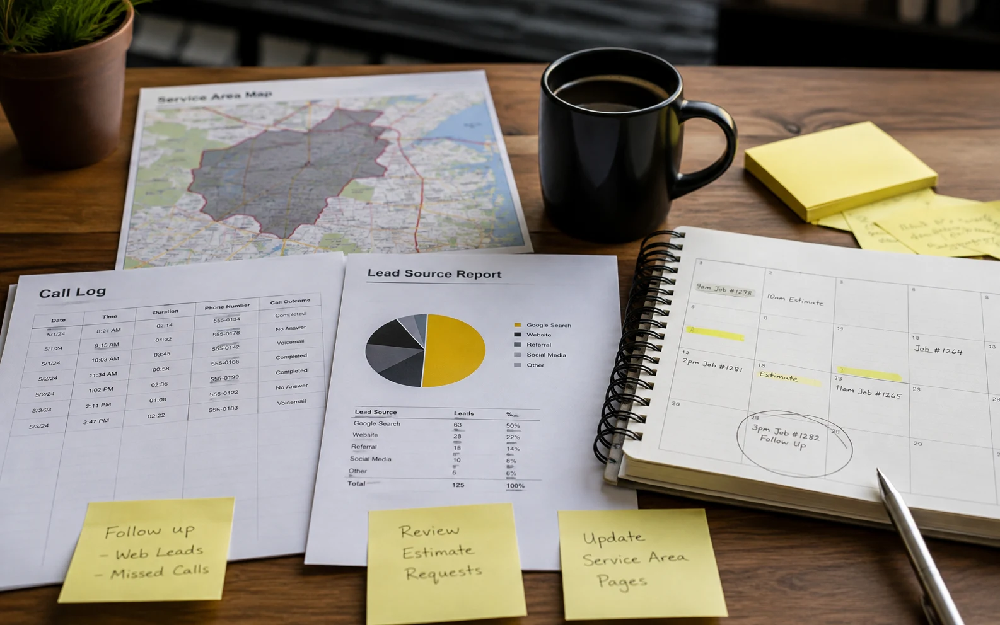

Lead Generation
Leads that matter.
Performance acquisition built around qualified leads, booked appointments and customers — not form volume alone.
Calls ✦
Forms ✦
Booked Appointments ✦
Qualified Leads ✦
Customers ✦
CRM Feedback ✦
Lead quality
Beyond the form.
A cheap lead is not necessarily a good lead. Performance improves when advertising learns which enquiries become real opportunities.
We connect campaign performance with conversion tracking and CRM feedback so optimisation can move beyond raw lead volume toward qualification, appointments and customers.
Campaigns built around
high-intent acquisition.
Landing-page conversion
measurement.
CRM and offline conversion
feedback.
CPL, CPA and lead-quality
optimisation.
Lead acquisition
Built around lead quality.
The goal is not just generating enquiries. The system should reveal which sources, campaigns and search terms produce valuable opportunities.
Lead Capture
Campaign and landing-page journeys designed around meaningful conversion actions.
- Forms
- Calls
- Appointments
- Demo requests
CRM Feedback
Feed qualification and customer outcomes back into performance analysis.
- Qualified leads
- Sales stages
- Offline conversions
- Customer outcomes
Optimisation
Campaign decisions evaluated against both lead volume and lead quality.
- CPL
- Qualified CPL
- CPA
- Conversion rate
Attribution
Better visibility into which campaigns contribute to meaningful business outcomes.
- Source tracking
- Campaign tracking
- Conversion paths
- Lead quality
Lead quality
More enquiries that are easier to qualify.
Lead generation performs best when campaigns, forms, calls and CRM feedback are connected around the same definition of value.
The result is cleaner demand, fewer wasted clicks and a system that learns from the opportunities your team actually wants.
Better-fit prospects.
Campaigns are shaped around intent, service fit and follow-up quality.
Clear lead feedback.
Source, campaign and keyword data show which leads deserve more budget.
Google Ads
Reach relevant, high-intent demand.
Landing Page
Turn intent into a measurable enquiry.
Lead
Capture the initial conversion.
CRM
Follow qualification and sales status.
Qualified Lead
Optimise toward valuable opportunities.
0
Lead paths mapped
0
CRM flows connected
0
Funnel signals
Acquisition strategy
Local Leads
B2B
Bookings
Qualification
Pipeline
Better leads after the click

Customers
Lead generation businesses
Different funnels. Same principle.
Local enquiries.
High-intent acquisition for businesses where the goal is calls, forms and booked jobs.
- Local services
- Home services
- Appointment enquiries
- Lead qualification
Professional leads.
Acquisition where service type, location, intent and lead quality can strongly affect commercial value.
- Legal
- Finance
- Education
- Professional services
Qualified pipeline.
Turn paid traffic into demos, calls and sign-ups your team can work.
- Demo requests
- Booked calls
- Product sign-ups
- Sales-ready leads
Booked appointments.
Appointment-driven acquisition can be measured from initial enquiry through booking and qualification.
- Appointments
- Service enquiries
- Local intent
- Conversion tracking
Lead intelligence
Measure what happens next.
Lead generation reporting becomes more useful when marketing metrics sit beside qualification and customer outcomes.
CPL
Cost per lead
QL
Qualified leads
CPA
Cost per customer
Sales feedback helps reveal which campaign conversions carry real value.
Better outcome data supports stronger optimisation and clearer reporting.
Pipeline feedback separates high-intent enquiries from low-value form fills.
Connected sales outcomes make campaign learning faster and more accurate.
Audit
Review traffic sources, landing pages, forms, tracking events and CRM feedback to understand where qualified leads are really coming from.
Define
Define the conversion actions, lead stages and qualification signals that separate useful opportunities from low-value form fills.
Launch
Build campaigns, audience logic, landing page paths and measurement around the strongest signs of buying intent.
Qualify
Connect CRM or offline feedback where possible, so campaigns can learn from real lead quality instead of surface-level volume.
Optimise
Improve targeting, search terms, budget flow and page signals around CPL, lead quality and actual customer acquisition.
Scale
Move budget toward channels, audiences and offers that consistently prove quality, sales readiness and stronger pipeline value.
Lead scenarios
Measure beyond the enquiry.
Why it matters
Better feedback. Better leads.
Lead-generation performance improves when campaign optimisation can see more than the initial conversion.
Better lead quality
Campaigns can be evaluated using qualification and customer outcomes, not only lead quantity.
Smarter optimisation
Deeper conversion signals provide more useful feedback for campaign management.
Clear CRM context
Sales-stage data helps show where marketing is producing real commercial value.
Controlled acquisition
CPL and CPA can be viewed together with qualification and downstream outcomes.
Faster lead flow
Campaign structure and landing intent are tightened so qualified enquiries can arrive with less wasted spend.
Better quality signals
Lead feedback, CRM context and conversion tracking help separate real opportunities from form fills.
Controlled acquisition
Spend decisions stay tied to CPL, qualification rate and the channels that create reliable pipeline.
Questions
Lead gen, clarified.
Practical questions before reviewing an existing lead-generation system.
Where qualification or CRM data is available, campaign analysis can move beyond lead volume toward deeper business outcomes.
CRM and offline conversion tracking can be considered where the client's systems support the required data flow.
Yes. Lead-generation systems can support local businesses, home services, clinics, professional services and other appointment-driven businesses.
Yes. The review can cover advertising, landing-page conversions, tracking and available lead-quality data.